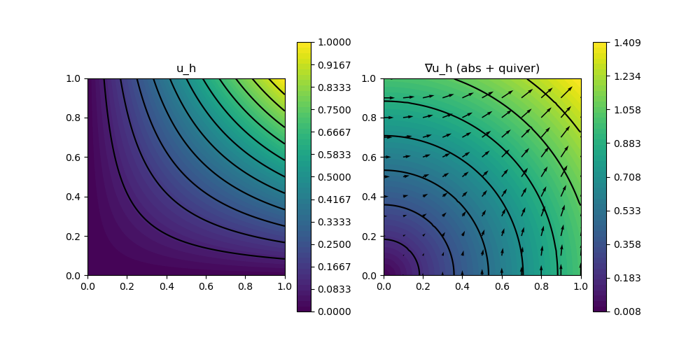
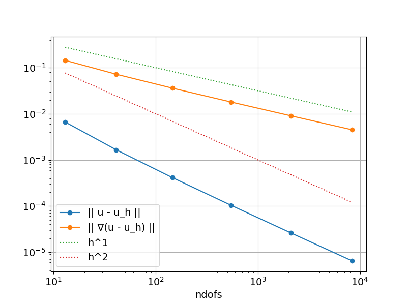

210 : Nonlinear Poisson Problem 2D
This example computes the solution $u$ of the nonlinear Poisson problem
\[\begin{aligned} -\mathrm{div}(q(u) \nabla u) & = f \quad \text{in } \Omega \end{aligned}\]
with some right-hand side $f$ on a series of uniform refinements of the unit square $\Omega$. The quantity q(u) makes the problem nonlinear and we consider the two possibilites
\[\begin{aligned} q_1(u) &:= 1 + u^2\\ q_2(u) &:= (\kappa + \lvert \nabla u \rvert)^{p-2} \end{aligned}\]
where the second one is known is the p-Laplacian (plus some small regularisation $\kappa \geq 0$ to make it solvable with the Newton solver).
This example demonstrates the automatic differentation feature and explains how to setup a nonlinear expression and how to assign it to the problem description. The setup is tested with some manufactured quadratic solution.
Also the factorization in the linear solver can be changed to anything <:ExtendableSparse.AbstractFactorization (but not every one will work in this example).
module Example210_NonlinearPoisson2D
using GradientRobustMultiPhysics
using ExtendableSparse
using Printf
# problem data
function exact_function!(result,x)
result[1] = x[1]*x[2]
return nothing
end
function exact_gradient!(result,x)
result[1] = x[2]
result[2] = x[1]
return nothing
end
function rhs!(q,p,κ)
function closure(result,x)
if q == 1
result[1] = -2*(x[1]^3*x[2] + x[2]^3*x[1]) # = -div((1+u^2)*grad(u))
elseif q == 2
result[1] = -2*(p-2) * (κ + x[1]^2+x[2]^2)^((p-2)/2-1) * x[1] * x[2] # = -div((κ + |grad(u)|)^p-2*grad(u))
end
return nothing
end
return closure
end
function diffusion_kernel1!(result::Array{<:Real,1}, input::Array{<:Real,1})
# input[1,2:3] = [u, grad(u)]
result[1] = (1+input[1]^2)*input[2]
result[2] = (1+input[1]^2)*input[3]
return nothing
end
function diffusion_kernel2!(p,κ)
function closure(result::Array{<:Real,1}, input::Array{<:Real,1})
# input[1:2] = [grad(u)]
# we use result[1] as temporary storage to compute (κ + |∇u|)^(p-2)
result[1] = (κ + input[1]^2 + input[2]^2)^((p-2)/2)
result[2] = result[1] * input[2]
result[1] = result[1] * input[1]
return nothing
end
return closure
end
# everything is wrapped in a main function
# default argument trigger P1-FEM calculation, you might also want to try H1P2{1,2}
function main(; q = 1, p = 2.7, κ = 0.0001, Plotter = nothing, verbosity = 0, nlevels = 6, FEType = H1P1{1}, testmode = false, factorization = ExtendableSparse.LUFactorization)
# set log level
set_verbosity(verbosity)
# choose initial mesh
xgrid = grid_unitsquare(Triangle2D)
# negotiate data functions to the package
user_function = DataFunction(exact_function!, [1,2]; name = "u_exact", dependencies = "X", quadorder = 2)
user_function_gradient = DataFunction(exact_gradient!, [2,2]; name = "grad(u_exact)", dependencies = "X", quadorder = 1)
user_function_rhs = DataFunction(rhs!(q,p,κ), [1,2]; dependencies = "X", name = "f", quadorder = 4)
# prepare nonlinear expression (1+u^2)*grad(u)
if q == 1
nonlin_diffusion = GenerateNonlinearForm("(1+u^2) ∇u ⋅ ∇v", [Identity, Gradient], [1,1], Gradient, diffusion_kernel1!, [2,3]; quadorder = 4, ADnewton = true)
elseif q == 2
nonlin_diffusion = GenerateNonlinearForm("(κ+|∇u|^2) ∇u ⋅ ∇v", [Gradient], [1], Gradient, diffusion_kernel2!(p,κ), [2,2]; quadorder = 5, ADnewton = true)
else
@error "only q ∈ [1,2] !"
end
# generate problem description and assign nonlinear operator and data
Problem = PDEDescription("nonlinear Poisson problem")
add_unknown!(Problem; unknown_name = "u", equation_name = "nonlinear Poisson equation")
add_operator!(Problem, [1,1], nonlin_diffusion)
add_boundarydata!(Problem, 1, [1,2,3,4], BestapproxDirichletBoundary; data = user_function)
add_rhsdata!(Problem, 1, RhsOperator(Identity, [0], user_function_rhs; store = true))
@show Problem
# prepare error calculation
L2ErrorEvaluator = L2ErrorIntegrator(Float64, user_function, Identity)
H1ErrorEvaluator = L2ErrorIntegrator(Float64, user_function_gradient, Gradient)
NDofs = zeros(Int,nlevels)
Results = zeros(Float64,nlevels,2)
# loop over levels
Solution = nothing
for level = 1 : nlevels
# uniform mesh refinement
xgrid = uniform_refine(xgrid)
# create finite element space and solution vector
FES = FESpace{FEType}(xgrid)
Solution = FEVector{Float64}("u_h",FES)
# solve
@show Solution
solve!(Solution, Problem; linsolver = factorization)
# calculate L2 and H1 error and save data
NDofs[level] = length(Solution.entries)
Results[level,1] = sqrt(evaluate(L2ErrorEvaluator,Solution[1]))
Results[level,2] = sqrt(evaluate(H1ErrorEvaluator,Solution[1]))
end
if testmode == true
return Results[end,2]
else
# plot
GradientRobustMultiPhysics.plot(xgrid, [Solution[1], Solution[1]], [Identity, Gradient]; Plotter = Plotter)
# print/plot convergence history
print_convergencehistory(NDofs, Results; X_to_h = X -> X.^(-1/2), ylabels = ["|| u - u_h ||", "|| ∇(u - u_h) ||"])
plot_convergencehistory(NDofs, Results; add_h_powers = [1,2], X_to_h = X -> X.^(-1/2), Plotter = Plotter, ylabels = ["|| u - u_h ||", "|| ∇(u - u_h) ||"])
end
end
# test function that is called by test unit
# tests if the above problem is solved exactly by P2-FEM
function test()
return main(; FEType = H1P2{1,2}, q = 1, nlevels = 1, testmode = true)
end
endThis page was generated using Literate.jl.
Default output:
julia> Example210_NonlinearPoisson2D.main()
PDE-DESCRIPTION
===============
system name = nonlinear Poisson problem
id | unknown name / equation name
[1] | u / nonlinear Poisson equation
LHS block | PDEOperator(s)
[1,1] | (1+u^2) ∇u ⋅ ∇v [AD-Newton] [∂u] (APT = NonlinearForm, AT = ON_CELLS, regions = [0])
RHS block | PDEOperator(s)
[1] | (1+u^2) ∇u ⋅ ∇v [AD-Newton] (APT = NonlinearForm, AT = ON_CELLS, regions = [0])
| (f, id(v)) (APT = LinearForm, AT = ON_CELLS, regions = [0])
BoundaryOperator[1] : BestapproxDirichletBoundary -> [1, 2, 3, 4]
Problem =
Solution =
FEVector information
====================
block | ndofs | name (FEType)
[ 1] | 13 | u_h (H1P1{1})
ITERATION | LSRESIDUAL | NLRESIDUAL
--------------------------------------
1 | 1.276908e-16 | 1.879348e-01
2 | 2.415941e-16 | 2.427676e-03
3 | 2.586077e-16 | 3.580510e-07
4 | 6.032275e-16 | 8.010898e-15
Solution =
FEVector information
====================
block | ndofs | name (FEType)
[ 1] | 41 | u_h (H1P1{1})
ITERATION | LSRESIDUAL | NLRESIDUAL
--------------------------------------
1 | 5.090761e-16 | 1.552235e-01
2 | 1.484570e-15 | 1.898915e-03
3 | 1.106914e-15 | 4.461316e-07
4 | 9.502417e-16 | 2.342188e-14
Solution =
FEVector information
====================
block | ndofs | name (FEType)
[ 1] | 145 | u_h (H1P1{1})
ITERATION | LSRESIDUAL | NLRESIDUAL
--------------------------------------
1 | 1.464268e-15 | 9.834582e-02
2 | 2.233430e-15 | 1.307935e-03
3 | 3.254315e-15 | 4.214647e-07
4 | 2.580234e-15 | 2.988996e-14
Solution =
FEVector information
====================
block | ndofs | name (FEType)
[ 1] | 545 | u_h (H1P1{1})
ITERATION | LSRESIDUAL | NLRESIDUAL
--------------------------------------
1 | 2.434626e-15 | 5.522608e-02
2 | 3.915451e-15 | 8.487585e-04
3 | 4.838680e-15 | 2.555420e-07
4 | 4.774031e-15 | 2.301925e-14
Solution =
FEVector information
====================
block | ndofs | name (FEType)
[ 1] | 2113 | u_h (H1P1{1})
ITERATION | LSRESIDUAL | NLRESIDUAL
--------------------------------------
1 | 4.931135e-15 | 2.924738e-02
2 | 9.727530e-15 | 4.905172e-04
3 | 9.447878e-15 | 1.346748e-07
4 | 9.658176e-15 | 1.975828e-14
Solution =
FEVector information
====================
block | ndofs | name (FEType)
[ 1] | 8321 | u_h (H1P1{1})
ITERATION | LSRESIDUAL | NLRESIDUAL
--------------------------------------
1 | 9.796520e-15 | 1.504798e-02
2 | 1.912058e-14 | 2.640269e-04
3 | 1.924815e-14 | 6.824838e-08
4 | 1.929606e-14 | 3.303793e-14
ndofs | || u - u_h || order | || ∇(u - u_h) || order |
============|=============================|=============================|
13 | 6.62330e-03 0.000 | 1.44378e-01 0.000 |
41 | 1.65803e-03 2.412 | 7.21744e-02 1.207 |
145 | 4.14699e-04 2.194 | 3.60851e-02 1.098 |
545 | 1.03688e-04 2.094 | 1.80423e-02 1.047 |
2113 | 2.59229e-05 2.046 | 9.02111e-03 1.023 |
8321 | 6.48078e-06 2.023 | 4.51055e-03 1.011 | 